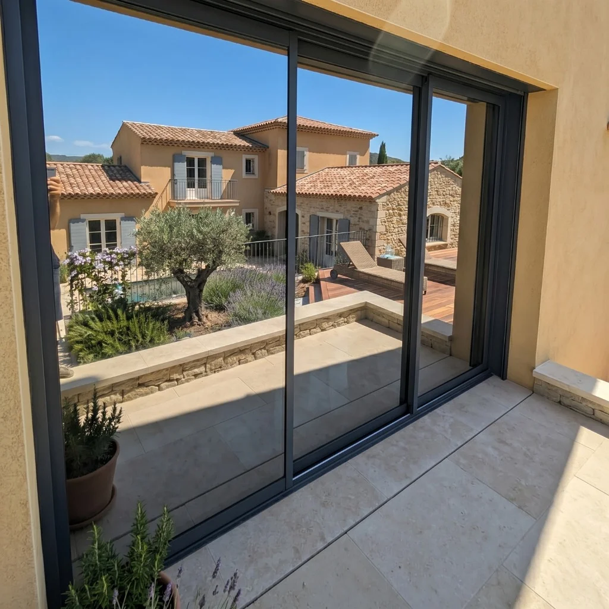
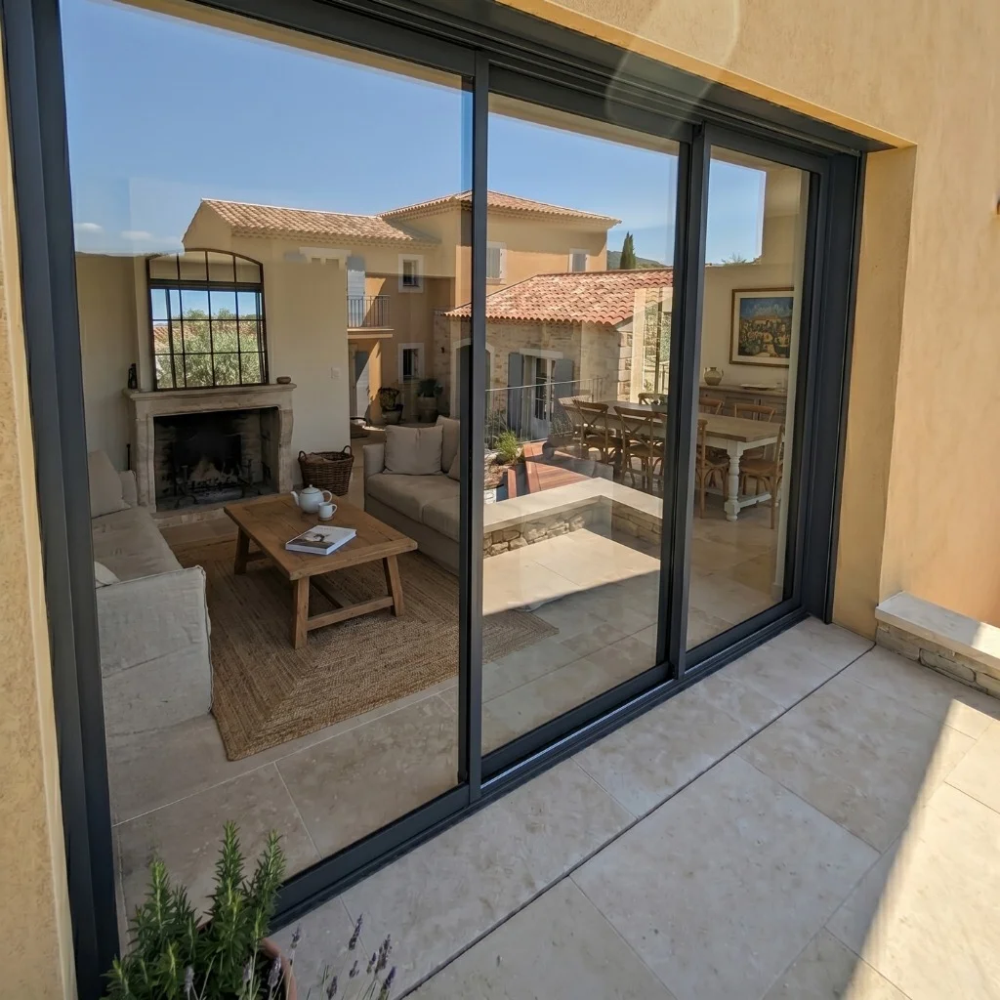

Réalisation Opalis Solaire · Drôme
Une baie vitrée, un salon plus intime.
Sur cette baie vitrée de maison, la demande associait le confort face au soleil et la discrétion depuis la cour. Une solution réfléchissante a été appliquée sur les vitrages existants.
← Toutes nos réalisations

Photos réelles du chantier. Déplacez le curseur pour comparer les prises de vue. Les cadrages et la lumière peuvent différer.
- Lieu / usage
- Maison individuelle
- Périmètre
- Environ 8 m²
- Intervention
- 2 heures
- Solution
- Film solaire effet miroir
Ce que nous devions améliorer.
La grande baie coulissante ouvre le salon sur la terrasse. L’enjeu consistait à limiter les regards en journée et les apports solaires, tout en conservant la vue vers l’extérieur.
Le traitement du vitrage existant.
Le chantier a consisté à préparer les vitrages, puis à appliquer le film solaire sur la face extérieure. Le soin des découpes et des finitions permet de traiter la baie sans remplacer la menuiserie.
Ce qui compte pour un projet similaire.
L’effet miroir dépend de la différence de lumière entre les deux côtés du vitrage. Pour une pièce utilisée le soir, nous expliquons cette limite et les solutions complémentaires possibles.
Et le résultat thermique ?
Ces photos présentent le rendu du chantier. Elles ne mesurent pas le gain de température ou d’énergie. Aucun relevé comparatif chiffré n’est publié pour cette réalisation.
Comprendre l’efficacité et ses conditions ↗

Votre installateur en Auvergne-Rhône-Alpes
Un vitrage similaire ?
Parlons de votre besoin.
Le rendu, le support et les conditions du lieu guident notre proposition. Nous conseillons, fournissons et posons le film adapté.
Un besoin, plusieurs façons d’y répondre
Pour avancer dans
votre projet.
Miroir ou dépoli : choisir le rendu
Ce qui dépend de la lumière et ce qui masque la vue.
Découvrir
Que peut-on réellement attendre ?
Température, ressenti, énergie : les bons repères pour comparer.
Découvrir
Du besoin à la pose
Le diagnostic du vitrage et les étapes de votre projet.
Découvrir